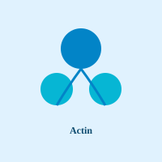
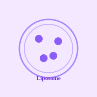
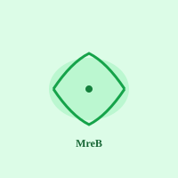
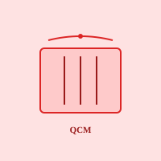

生体運動研究室
アクチンは細胞の骨格を形作る主要なタンパク質です。私たちは、アクチンが動的に重合・脱重合を繰り返すメカニズムと、それが生命現象に与える影響を分子レベルで解明しています。
Research

アクチンと結合タンパク質
アクチン重合とATP加水分解、また結合タンパク質による制御の1分子レベル理解。Actin and Actin-Binding ProteinsMolecular analysis of actin polymerization, ATP hydrolysis, and regulation by binding proteins.
光制御によるアクチン細胞骨格のダイナミクスの繰り返し制御
Optical Control of the Actin Cytoskeleton Engineering light-switchable molecules to regulate actin dynamics.

リポソーム
人工脂質膜を用いて、細胞を模した反応系。Liposomes Cell-mimetic reaction systems based on artificial lipid membranes.

MreB（細菌ver.アクチン）
特に細胞を動かす能力を持つMreBの作用解明。Understanding how the bacterial actin homolog MreB contributes to cell motility.

Quartz Crystal Microbalance (QCM)
水晶振動子の共振周波数の変化を利用た、アクチンとミオシンの相互作用や粘弾性変化測定。 Probing actin–myosin interactions through state-dependent frequency shifts by QCM.
Members
Staff
准教授 (Associate Professor)
藤原郁子
アクチン動態の全反射顕微鏡観察
Students
星田 政行
アクチンフィラメントのMotility assay
水木 鳳了
アクチン結合タンパク質ゲルゾリン
小野里 幸太
アクチン変異体の機能解析
木下 愛友
アクチン結合タンパク質コフィリン
田路 卓巳
アクチン結合タンパク質Fascin
岩渕 康平
QCM
内海 諒成
リポソーム内でのアクチン重合
熊倉 愛斗
MreB2の重合観察
田口 優希
MreB5の重合観察
安達 偲
石井 康太郎
岩倉 阿南
小暮 太顕
News / Blog

2026.06.26
タコスパーティーをしました！
またまた料理できる系男子の田口さんが昼から具材の豚肉を煮込んでくれて、夜からタコスパーティーを開きました！
続きを読む →
2026.06.11
アヒージョパーティーをしました！
M1の熊倉さんがバイト先で貰ってきた大量の食パンを消費するために、あれこれ考えた結果、アヒージョを作ってパンも食べるということになりました。
続きを読む →
2026.05.12
D2の星田さんが釣ってきたワラサをさばいてみんなで食べました！
釣りが趣味の星田さんが釣ってきたワラサをさばいてみんなで食べました。
続きを読む →
2026.04.09
研究室のジャケ写を撮りました！
毎年恒例の技大校内の桜が満開の時期に、研究室メンバーでジャケット写真を撮影しました。B4の新しいメンバーも加えての写真撮影は初でした。
続きを読む →
2025.07.30
タイのチュラロンコン大学から短期留学生の学生さんが来ました！
国際連携の強化を目的に、タイのチュラロンコン大学から短期留学生を受け入れました。研究テーマや実験手法を共有し、お互いのバックグラウンドを尊重しながら学び合いました。
続きを読む →
2025.07.14
D3の三谷さんの論文「Microscopic and structural observations of actin filament capping and severing by cytochalasin D」がPNASに掲載されました！
アクチン阻害剤として広く用いられているcytochalasin Dがキャッピングと切断にどのように作用するかを詳細に示した点が評価されました。
続きを読む →
2025.07.07
夏の恒例行事として、桑原研、大沼研と合同で流しそうめんをしました！
夏の暑さを忘れるために、桑原研と大沼研のみなさんと合同で流しそうめん会を開きました。準備から片付けまで協力し、他研究室との交流も深まりました。
続きを読む →Access
所在地
〒940-2137
新潟県長岡市上富岡町１６０３−１
長岡技術科学大学 工学部 生体運動研究室
最寄り駅：JR線 長岡駅から車15分